Ben Groshell grew up fishing and crabbing on these waters. After graduating from the Culinary Institute of America in 1989, he came home, and in July 1992 he and his wife Liza opened Marker 32 in a second-floor dining room above the marina on the Intracoastal Waterway.
Over thirty years later it is still family owned. Sauces, stocks, soups and bread are made from scratch every day, with local seafood and produce.
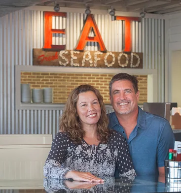
“I enjoy the back of the house with all the chefs. The camaraderie with those guys, having walked in their shoes, I can see what they need.”
Ben Groshell, chef and proprietor, to Arbus Magazine, 2023
From the kitchen · hover or tap to pause
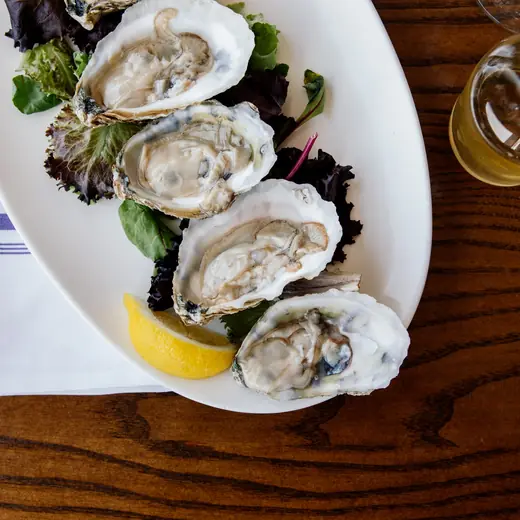
Oysters on the half shell
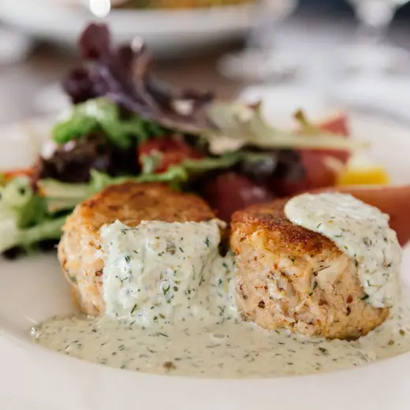
North Carolina blue crab
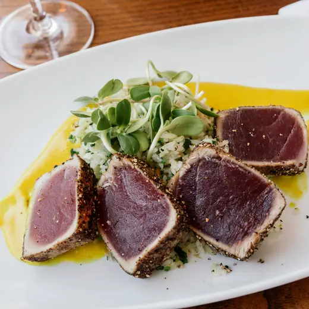
Yellowfin tuna
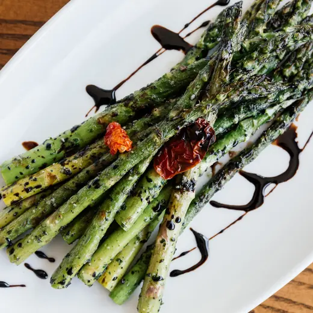
Grilled asparagus
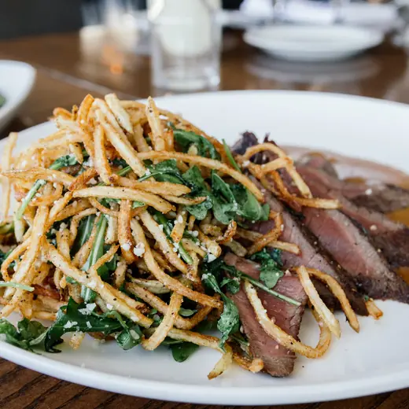
Prime New York strip
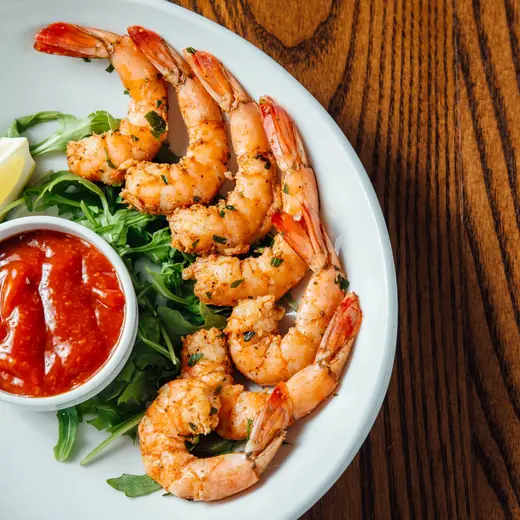
Wild caught shrimp
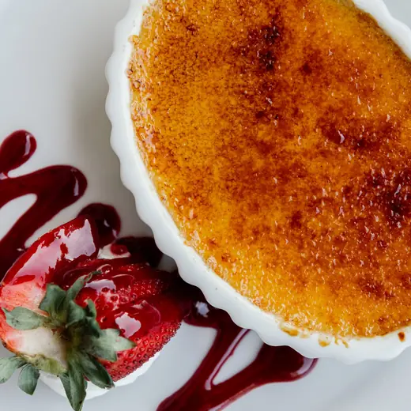
Tahitian vanilla crème brûlée
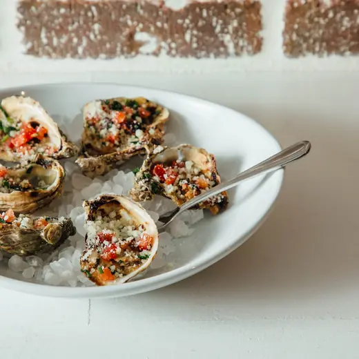
M32 broiled oysters
Oysters on the half shell
North Carolina blue crab
Yellowfin tuna
Grilled asparagus
Prime New York strip
Wild caught shrimp
Tahitian vanilla crème brûlée
M32 broiled oysters
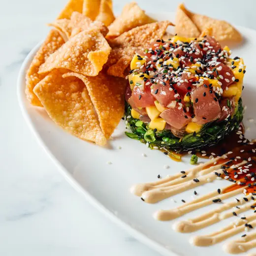
Tuna poke
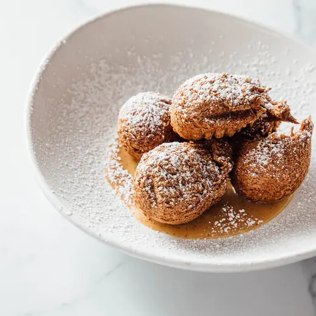
Sunday beignets
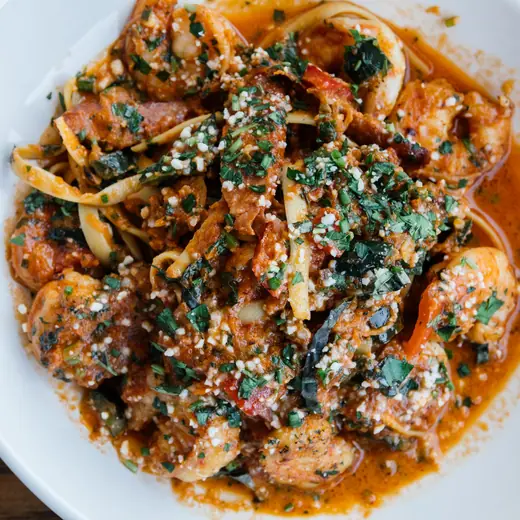
Shrimp fettuccine
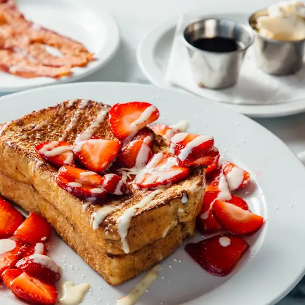
Sunday brunch
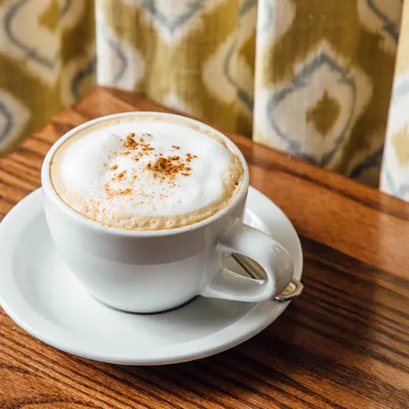
Cappuccino
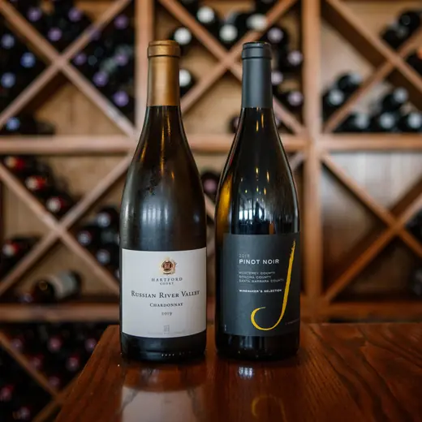
By the bottle
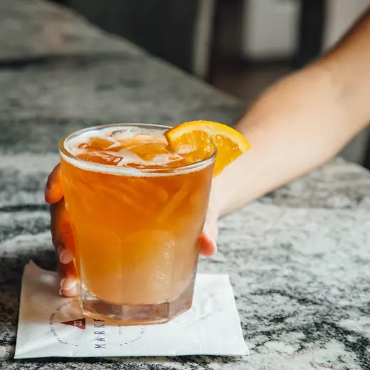
Cocktail hour
Tuna poke
Sunday beignets
Shrimp fettuccine
Sunday brunch
Cappuccino
By the bottle
Cocktail hour
II The evening
Three ways to spend it.
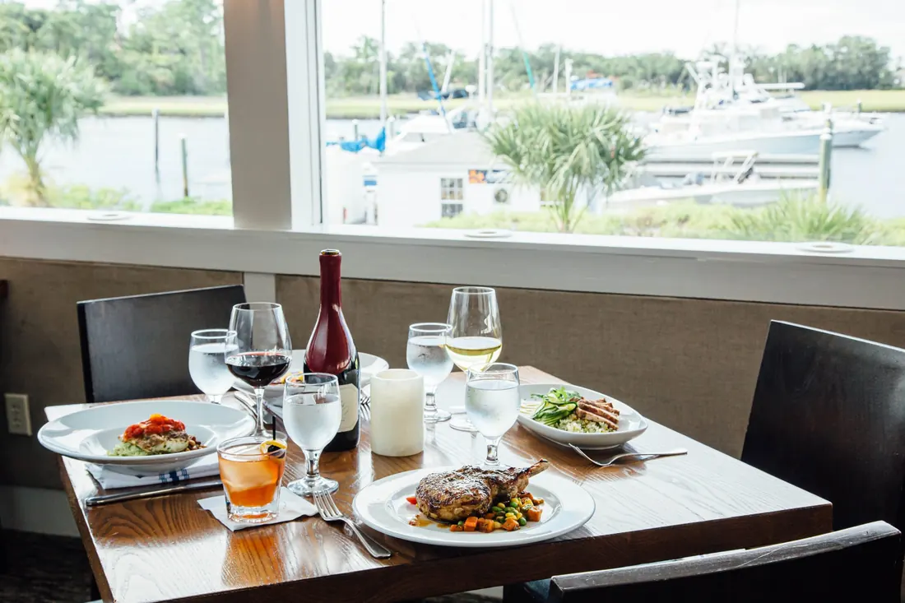
Dinner
Mon–Sat 5–10 PM · Sun 5–9 PM
The second-floor dining room looks over the marina and the Intracoastal. Oysters, blue crab, New Bedford scallops and prime steaks; plates run $19 to $45, plus a nightly seafood special at market price.
Marker 32 books on Resy, and tables are known to fill up fast. Parties of up to 8 can book online; for larger groups, call us.
Running late? Please call. Tables are held for a 15-minute grace period before they go to the waitlist. Booking window: [HOW FAR AHEAD RESERVATIONS OPEN]